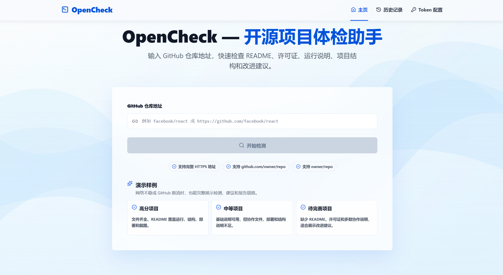
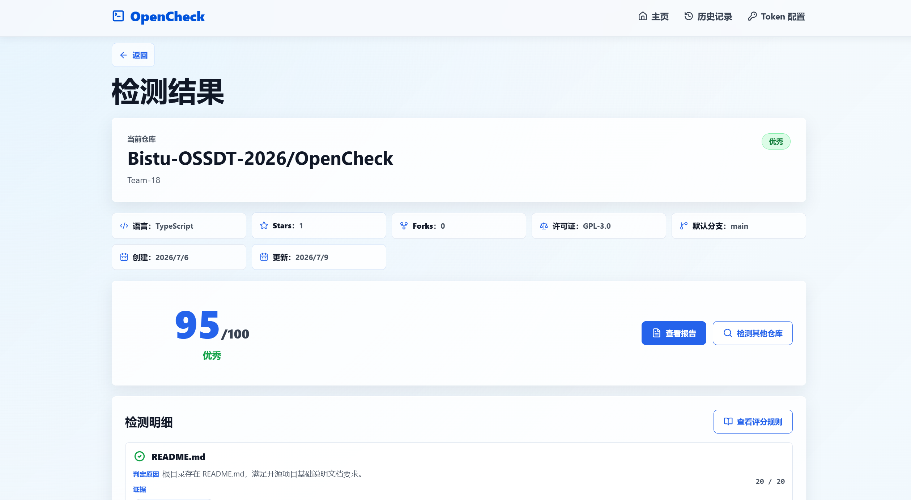
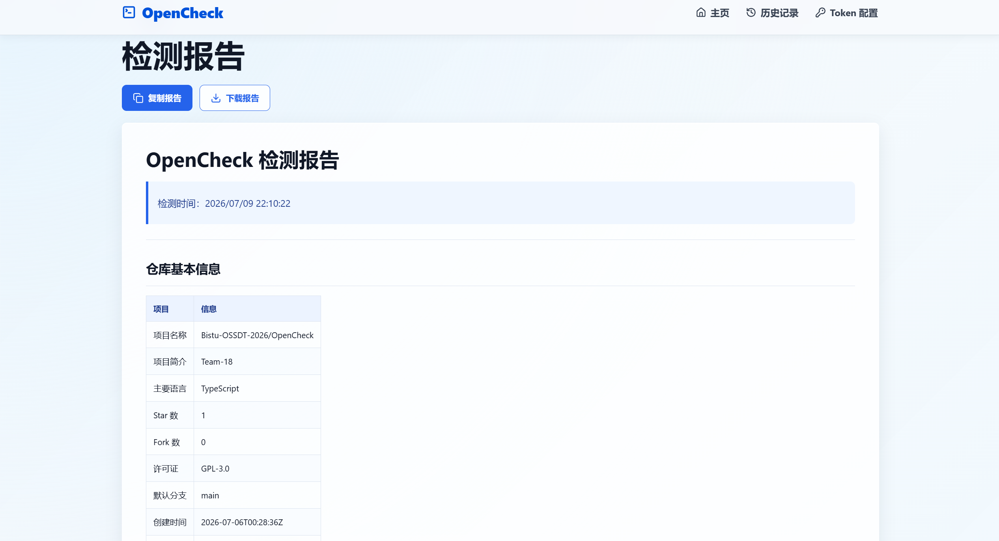

OpenCheck
开源项目体检助手
面向开源课程实践，检查 GitHub 公开仓库的文档与协作规范，整理评分、改进建议和 Markdown 报告。
- 纯前端 MVP
- React 18 + TypeScript
- Team-18
- GPL-3.0

从仓库规范到改进报告
- 文档与运行
- 检查 README、LICENSE、运行说明与项目结构，定位缺失或不完整的信息。
- 协作与 CI
- 检查贡献指南等协作文件和 GitHub Actions 自动化配置，给出规则判定依据。
- 评分与 Markdown
- 汇总评分、改进建议与检测明细，生成可复制、可下载的 Markdown 报告。
结果与报告


版本范围：仅面向 GitHub 公开仓库，基于启发式规则检查，不能替代人工 Review；不含后端数据库、账号系统或云端同步。此处为项目资料与截图展示，运行方式请见上游 README。